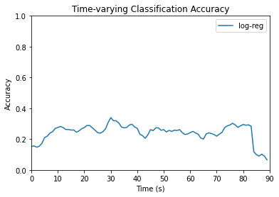
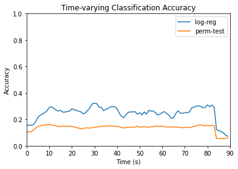

HCP Logistic Regression
Contents
HCP Logistic Regression#
Time Series Classification with ROI Features#
Multinomial logistic regression was applied to the HCP dataset for 15-way time series classification of movie clips. Code can be found here.
Dimensions of the data were used for the following purposes:
Movie name - apply as label for classification
ROI - use as features for classification
Subject - split into training and testing sets
Time point - categorize model results as time series of accuracies
Dataset Creation#
The dataset was transformed from a dictionary with movie clip names as keys and arrays of fMRI data as values (see summary) to 2-dimensional arrays of X- and Y- train and test sets. Based on the findings from Misra et al., only the first 90 seconds, equivalent to the first 90 time points, were used.
A 2-dimensional array was created containing data across all of the first 90 time points. Each row was designated for a different subject-movie clip combination. For ‘testretest’ cases, different runs from the same subject were also compiled as separate rows. Columns were designated for distinct ROIs. Thus, each array had 300 feature columns, in addition to a movie label column, a time point column, and a participant number column.
\( \begin{bmatrix} ROI_{1} & ROI_{2} & \cdots & ROI_{300} & \text{movie} & \text{time} & \text{subj} \\ -2.3054726 & -1.6874946 & \cdots & -2.871706 & \text{testretest} & 0 & 0 \\ -0.037214182 & 0.7795041 & \cdots & 1.4286939 & \text{testretest} & 0 & 1 \\ \vdots & \vdots & \ddots & \vdots & \vdots & \vdots & \vdots \\ -0.29585192 & 0.38137275 & \cdots & -0.3323956 & \text{starwars} & 89 & 175 \\ \end{bmatrix} \)
The data was split with 100 participants for training and 76 participants for testing. A list of participants used for the testing data set was randomly generated. Participant numbers within this list had corresponding ROI feature data stored in X_test and corresponding movie labels and time points stored in y_test. The same was done for participants not selected in the test set, except with X_train and y_train, respectively. All feature data in both training and testing sets was normalized using z-scores.
Logistic Regression Model#
A multinomial logistic regression model was created using the sci-kit learn library in Python. The model was fitted using the X_train set as input and the y_train set as output across all considered time points. Max_iters was set to 1000 and all other default parameter values were used.
The model was then evaluated with the testing data at all 90 time points, and the accuracy was saved. Classification accuracy at each time point was plotted, as shown below:

Permutation Testing#
To determine the effectiveness of applying logistic regression for 15-way movie clip classification, permutation tests was conducted on the model:
The chosen statistic to measure the effect of using a logistic regression model is classification accuracy. The original sample used for the permutation tests was the HCP testing dataset. The selected features were the 300 ROI. A permutation test was conducted at each time point considered, using only the data in the testing set that corresponded to that time point.
It is unclear whether this dataset was randomly selected. However, the data within each feature/variable is exchangeable, so permutations of the original dataset can be taken to create resamples.
Methodology#
At each of the 90 time points considered, 200 resamples of the original sample were created by permuting each feature independently. This was done in Python. The fitted logistic regression model was applied on each of the resamples. A classification accuracy was then calculated by \(\text{accuracy} = \frac{\text{correct classifications}}{\text{total classifications}}\), and a permutation distribution was constructed with the resulting values. The mean accuracy obtained from the original dataset and the 95th percentile of accuracies obtained from each permutation distribution were plotted as time series.

Conclusions#
Based on the results from above, if it is assumed that the fitted logistic regression model is equally as effective as random chance at classifying movie clips, there is an approximately 0% chance of seeing an original sample classification accuracy as large or larger than the observed. Since approximately 0 is clearly lower than any reasonable significance value, there is sufficient evidence to conclude that the trained logistic regression model is more effective than random chance at classifying movie clips.